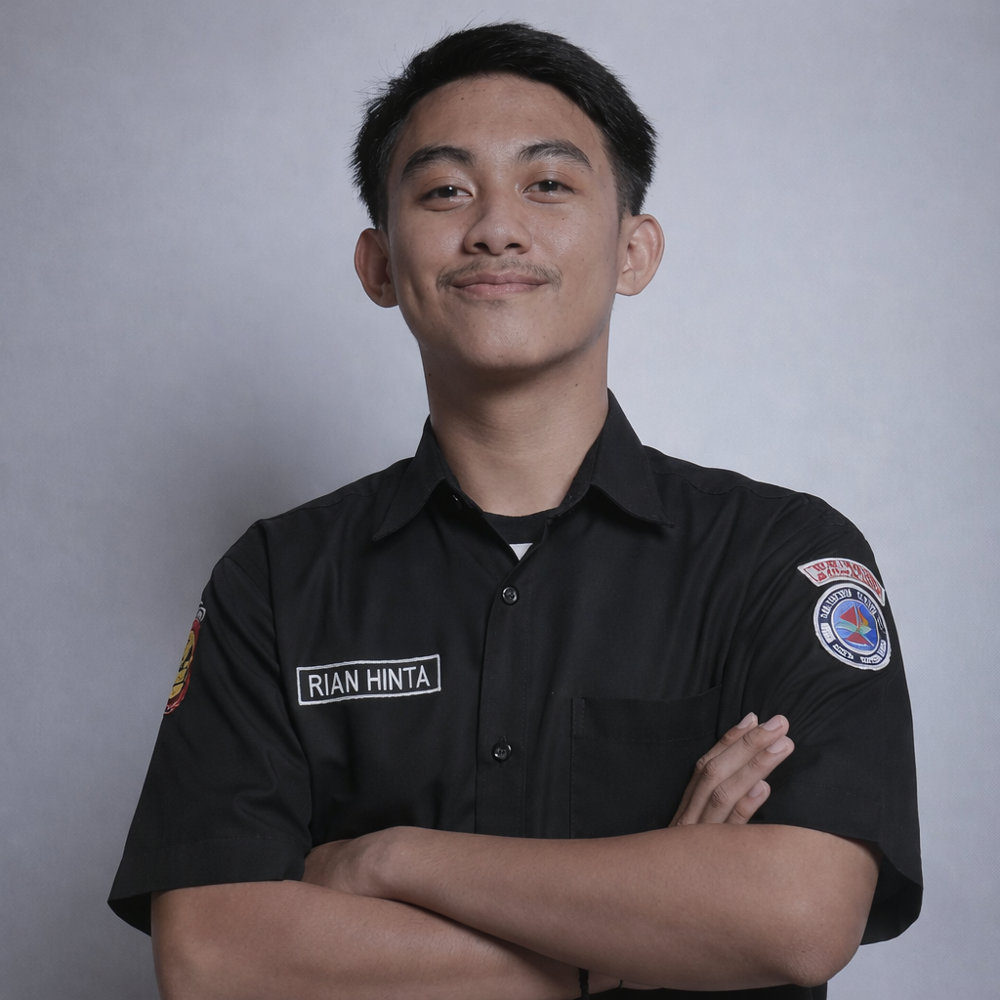
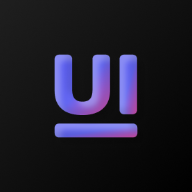
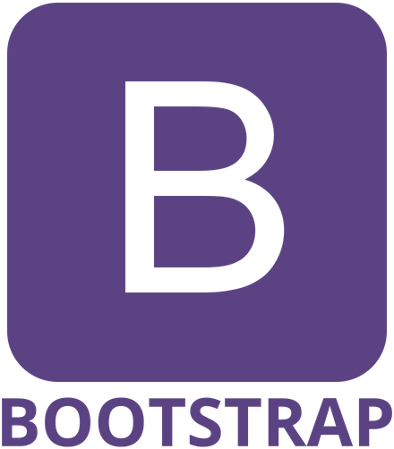

AdryanDev
Fullstack Developer
Seorang Fullstack developer, Saya suka mengubah ide-ide kreatif menjadi baris kode yang hidup,Saya memiliki minat terhadap teknologi.

Seorang Fullstack developer, Saya suka mengubah ide-ide kreatif menjadi baris kode yang hidup,Saya memiliki minat terhadap teknologi.

Tentang diri saya
Perkenalkan nama saya rian, saya merupakan mahasiswa Teknik informatika prodi sistem informasi. saya memulai kode pertama saya di bangku kelas 2 SMA, Kebetulan disekolah saya ada Mata pelajaran informatika. Bahasa pemrograman pertama yang saya pelajari adalah "PYTHON"
Tools yang saya gunakan untuk membangun project




